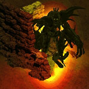

+ Witches and Warlocks +
Witches and Warlocks
Invulnerable ethereal demonic spirits that may appear near places of power. They cannot be destroyed, but present a deadly hazard for the unwary adventurer.

A violent death often leaves a spirit or poltergeist behind. Most spirits are weak, manifesting only as a sobbing on the wind or dancing ghost lights at night. Some grow stronger in death and guard their final resting place with unholy fury.
A witch is a rare sight, but great care should be taken around them. They are invulnerable to any attack or spell but are not aggressive and do not move. However, do not come too close and startle a witch - or else!... Their shockwave attack bypasses all defenses and attacks the victim's soul, killing instantly.
Strategy
Give a witch wide berth to avoid upsetting her. They do stand out from the crowd and their eerie song
can be heard up to a screen away. A witch will laugh when she is about to pounce - when you hear this,
run away immediately!
If a witch is completely blocking your path, summon a minion near her. She will kill it and then remain
inert for a few seconds, giving you an opportunity to run past.

Using hell's power against it is a dangerous path to follow. Many believe warlocks are cowardly and weak, using easy power at the cost of their own soul. Instead, most warlocks are demon hunters, sacrificing their immortal soul for the power to cleanse Sanctuary.
A powerful warlock may be able to resist the pull of the Burning Hells, getting stuck in the void between planes - a feared fate for most people, but the best possible outcome for a warlock. Warlocks that cannot overcome their curse end up like this.
Strategy
While less dangerous than witches, a warlock will rapidly cast homing punishers until out of mana. The
spiked balls slowly but relentlessly follow their victim, dealing massive damage on impact. Listen for
the demonic whispers announcing the presence of a nearby warlock.
If running away will result in unwanted enemy encounters, try running around an obstacle so the
punishers collide with the obstacle.